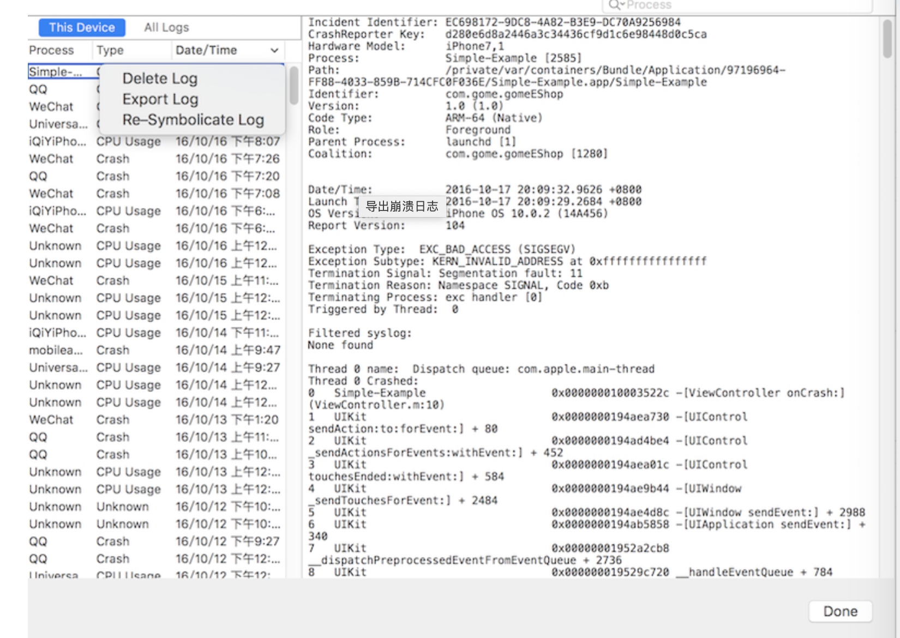
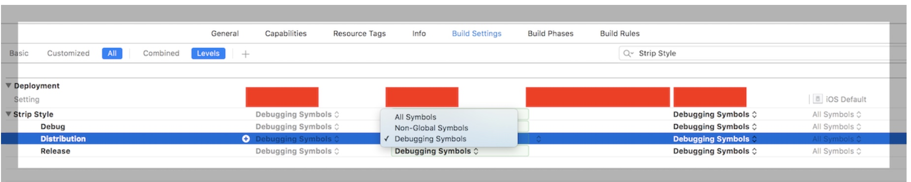
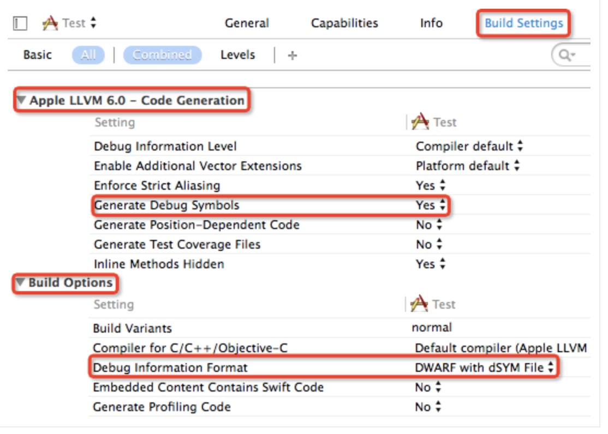
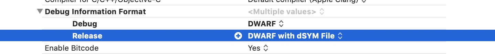

我们采集到的崩溃日志，主要包含以下内容:
- 进程信息: 崩溃进程的相关信息，比如崩溃报告唯一标识符、唯一键值、设备标识
- 基本信息: 崩溃发生的日期、iOS版本
- 异常信息: 异常类型、异常编码、异常的线程
- 线程回溯: 奔溃是的方法调用栈
- 进程状态: 闪退时寄存器中的值
- 二级制映像: 闪退时已经加载的二进制文件
通常我们分析日志信息先看异常信息，分析出问题的线程，然后在回溯中找到对应线程，查看符号化后的方法调用栈，分析问题
异常类型
常用的有:
EXC_CRASH
EXC_BAD_ACCESS (SIGSEGV)
NSRangeException
NSZombie
等
异常编码
在App被系统杀掉的情况 可以通过查看异常编码，可以查看完整的异常编码信息
常用的就一下几种:
- 0x8badf00d 表示app长时间无响应被watchdog杀掉
- 0xdeadfa11 表示app被用户强制退出
- 0xc00010ff 表示app因为运行设备温度过高被杀
获取日志
常用的获取crash日志信息方式有以下几种
1. 系统自带
当一个app崩溃时，iOS系统自带的CrashReporter会创建一份crash日志保存在设备上。如果能拿到Crash的手机，就可以通过Xcode或symbolicatecrash符号化Crash日志。如果设备上的Crash 日志超过了一定数量，可能保存不了Crash日志
使用Xcode导出日志
在Xcode->Window菜单->Devices，弹出的设备面板，选择崩溃的设备 -> 选择右侧的View Device Logs->选中导出的日志，右击，选中export log, 导出.crash后缀的崩溃日志

2. 第三方SDK
例如友盟、bugly等
3. 开源框架
常用的有KSCrash
4. 自己收集和符号化程序
解析日志
DWARF简介
DWARF（DebuggingWith Arbitrary Record Formats），是ELF和Mach-O等文件格式中用来存储和处理调试信息的标准格式，.dSYM中真正保存符号表数据的是DWARF文件。
保存在DAWARF中的信息是高度压缩的，可以通过dwarfdump命令从中提取出可读信息
什么是符号表
iOS符号表用来将堆栈信息对应到源码信息，常用来帮助还原crash的堆栈信息，来快速定位出错的代码位置
符号表是debug的产物，使用archive模式打包，符号表会被裁减掉，这也增加了应用安全，提高逆向的难度。我们可以在xcode选项中配置为不裁剪，但是这会让打包的IPA变大:

Archive时文件中虽然没有符号表，但是生成了一个dSYM符号文件，通常名称为xxx.app.dSYM
Xcode Release编译默认会生成dSYM文件，而debug编译默认不会生成,对应的Xcode配置如下：
XCode -> Build Settings -> Code Generation -> Generate Debug Symbols -> Yes
XCode -> Build Settings -> Build Option -> Debug Information Format -> DWARF with dSYM File


每次构建都会生成不同的符号表，每个符号表都有不同的UUID
查看dSYM文件的UUID
xcrun dwarfdump --uuid <dSYM文件>
因此发布的app，在crash后并不能在设备上完成符号化工作，只能返回带地址的日志信息，需要我们自己进行符号化解析
用Xcode解析日志
当crash log和DSYM或者App携带的UUID一致时(crash log的UUID指的是镜像的UUID)，Xcode可以将日志中的地址信息符号化为代码中的符号
- 如果该App是由自己电脑编译生成的，Xcode根据spotlight自动找到对应的符号文件
如果不是自己电脑编译生成的，只需要将.app和dSYM放入同一文件夹，然后手动生成索引。
//mdimport命令: 导入文件到datasource,这样Xcode也能找到符号文件 mdimport pathNameXcode能根据UUID找到对应的符号文件，就能通过Xode的Xcode->Devices->View Device Logs自动解析解析崩溃日志
symbolicatecrash
symbolicatecrash是Xcode自带的一个分析工具，可以通过机器上的崩溃日志和应用的.dSYM文件定位发生崩溃的位置，把crash日志中的一堆地址替换成代码相应位置。
步骤:
找到symbolicatecrash文件位置
find /Applications/Xcode.app -name symbolicatecrash -type f将找到的文件拷贝到自己创建的文件夹中
从Xcode的Archive中找到.dSYM文件和.app文件拷贝到自己创建的文件夹中
在终端执行命令
./symbolicatecrash ./*.crash ./*.app.dSYM > symbol.crash如果这一步出现
DEVELOPER_DIR错误 就需要先执行命令export DEVELOPER_DIR="/Applications/XCode.app/Contents/Developer"在symbol.crash中查看符号化后崩溃信息
atos命令
这是更常用的命令
//loadAddress：进程加载地址
//architecture： 架构常用的有arm64或者armv7
atos [-o AppName.app/AppName] [-l loadAddress] [-arch architecture]
atos -o Your.app.dSYM/Contents/Resources/DWARF/Your -arch armv7 -l 0xa2000 0x000f0846